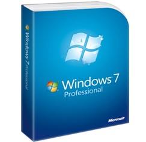

Windows 7 dirilis untuk dunia nirkabel dari tahun 2000-an. Laptop mengalahkan desktop, dan itu menjadi umum untuk terhubung ke hotspot nirkabel publik di toko-toko kopi dan jaringan pribadi di rumah. Windows 7 termasuk cara-cara baru untuk bekerja dengan jendela, seperti: Snap, Peek, dan Shake yang meningkatkan fungsionalitas dan membuat antarmuka lebih menyenangkan untuk digunakan. Hal ini juga menandai debut Windows Touch yang memungkinkan pengguna touchscreen browsing web, membolak-balik foto, dan membuka file dan folder
